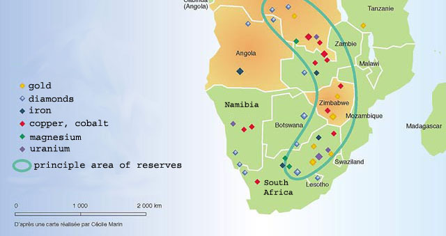

Most countries in the Southern Africa region operate under a unitary system, where the central government holds the majority of power and authority.
Designed to promote national unity and efficient governance (Mozambique, Zambia, Zimbabwe, Namibia, Botswana, Lesotho, Eswatini, and Madagascar all follow this model)
Eswatini is unique in the region as it remains an absolute monarchy, with the king having strong control over political decisions.
South Africa, in contrast, uses a hybrid system that includes both unitary and federal features. It has nine provinces with their own governments, but the national government still holds significant power. While not fully federal, South Africa's system allows for more local control compared to its neighbors.
Cultural
The region is culturally diverse, with a blend of indigenous traditions.
Major ethnic groups include the Bantu-speaking peoples, such as the Shona, Zulu, and Tswana.
English is widely spoken due to colonial legacies and its presence as a lingua franca, but there are many prominent local languages.
Cultural practices vary in different countries but there are some common things in music, dance, and living traditions.
Geographic
Geographically, the Southern African region features many different landscapes including deserts (Kalahari Desert), savannas, highlands , and coastlines.
The region is largely landlocked, with the exception of coastal nations like South Africa, Mozambique, Namibia, and Madagascar.
Botswana and Namibia have built stable economies around diamond mining, while Zambia and Zimbabwe are major exporters of copper and agricultural products.
Major rivers like the Orange, Zambezi and Limpopo traverse the area, and notable features include Victoria Falls and the Drakensberg Mountains. The climate ranges from arid in the west to tropical in the east.

Considerations
Censorship
Throughout history, many Southern African countries have faced strict censorship, especially during colonial times and apartheid, when governments controlled what people could say, read, or see.
Even today, some places still limit free speech and media - it is important to understand this history and respect current boundaries while encouraging open and thoughtful conversations.
Political Boundaries
The borders in Southern Africa were drawn by colonizers without thinking about the people who lived there.
This leads to borders not matching up with ethnic groups or cultures - don't assume one border equals one group.
Linguistic Diversity
There are tons of languages spoken in this region, like Zulu, Shona, Tswana, plus English and Portuguese.
Language is a huge part of identity, so it’s important to appreciate this diversity.
Religion
Religion in Southern Africa is very varied from Christianity to traditional African beliefs to Islam.
Religion influences daily life and culture deeply, so understanding this mix helps us understand the people better.